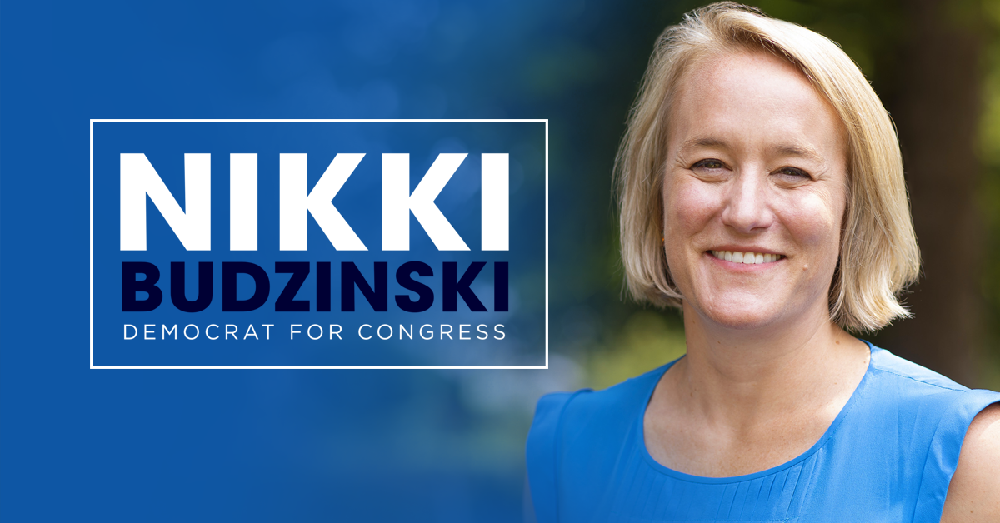

What exactly is the farm bill

The largest industry in Illinois is looking for the reauthorization of the Illinois farm bill from congress. The bill from 2018 expried at the end of September 2023. The reauthorization of this bill is considered one of the most important things the U.S. Congress could do for the state of Illinois. Not only does it help put food on our tables, but also it is a safety net for family farmers and ensures that we invest in our research and development. Also, the bill provides funds and supplies to rural communities that might need extra help. Therefore, if we do not get this legislative deal done, we could potentially create uncertainty for these farmers and communities.
Nikki Budzinski, U.S. Representative
The U.S. representative that is really pushing for the reauthorization of this bill was Nikki Budzinski. She shared her thoughts on the bill, why congress needs to reauthorize it, and what all the bill covers. “This massive legislative package is an opportunity for lawmakers to address farming and food needs while securing critical funding for agricultural programs and research” Budzinski said of the priorities regarding the bill. Her priorities are straight forward, she understands how much this bill means to the next generation of family farmers and the additional resources that come with it.